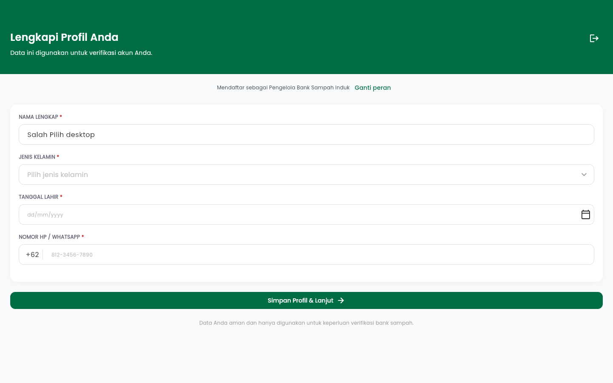
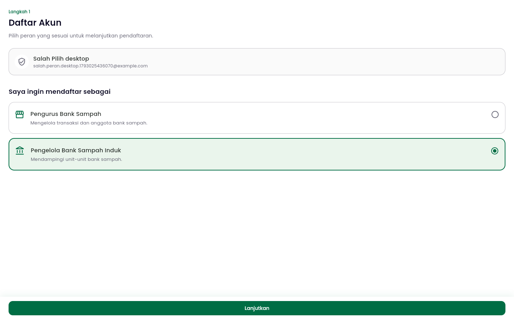
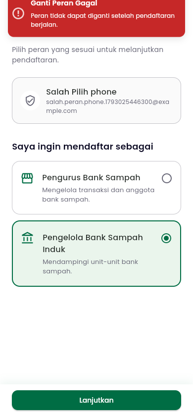
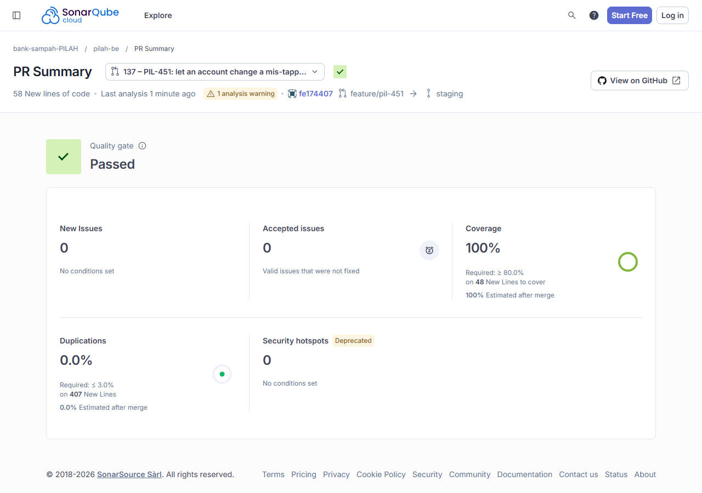
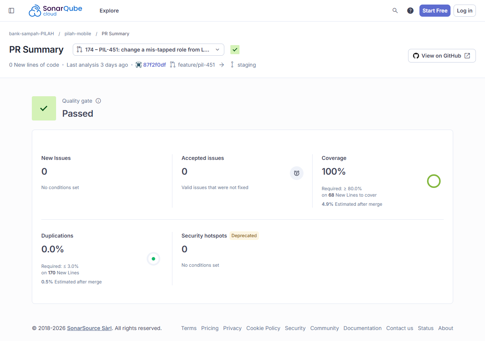

Test Driven Development¶
Competency level: 4
Level 3 met: both PIL-451 MRs were built test-first, one behaviour per [RED] → [GREEN] pair, with the phase in every commit subject and [REFACTOR] commits only after green. Every changed line is covered: 100% on SonarCloud for both MRs, 48 and 68 new lines. The tests cover the positive case, the negative cases (each refusal) and the corner cases (a stale account object, re-picking the same role, a malformed response).
Level 4: advanced testing methods in the commits:
- Mocks and fakes for isolation:
- the mobile data layer runs the real
AuthRepositoryImplon mocktail mocks of its remote and local data sources; captureAnycaptures the stored tokens to prove the new session is the one saved.- The notifier tests run the real
AuthenticationNotifieron a mockedLoginWithGoogleUseCase. Page tests use a fake notifier that recordschangeRoleand answers with a configured refusal or session.
- the mobile data layer runs the real
- A real race, made deterministic: a
TransactionTestCaseon PostgreSQL runs each registration in one thread, pausing right after its role check, and a role change in another. It's been checked both ways: all three paths fail without the row lock, and pass with it. - Guards proven by mutation: two tests passed when written. For each, I broke the code it guards, watched it fail, and reverted.
- E2E with database assertions: Playwright drives the web build through Flutter's semantics tree at desktop and phone sizes, then checks the backend's database for the stored role and the audit row.
Coverage proof at a glance¶
| MR | Work | SonarCloud new-code coverage | Local diff coverage |
|---|---|---|---|
| pilah-be #137 | PIL-451: PATCH /onboarding/role |
100% of 48 lines, screenshot | 100% of the changed lines (tests included), on Postgres 16, re-run after the review fixes |
| pilah-mobile #174 | PIL-451: "Ganti peran" and the role page | 100% of 68 lines, screenshot | 100% of 70 changed lines |
The local figures come from diff-cover against origin/staging, after coverage run manage.py test (backend) and flutter test --coverage (mobile). For #174, SonarCloud's first run showed 97.1%. The PR's CI runs only the changed test files, and two pre-existing lines next to my insertions counted as new; b2344b5 covered them in the files CI runs. Details on the Code Quality page.
Backend: pilah-be #137¶
| Behaviour | Red | Green | The red failed on |
|---|---|---|---|
| An unfinished account switches role, and the new access token names the new role | a23ba21 |
13c1a44 |
404: no route yet |
The role stays (409 role_locked) once the profile is complete, a bank sampah exists (pending included), or a membership is linked |
e227286 |
52f087f |
Two cases switched with 200. The linked member hit User.clean's ValidationError, an unhandled 500 |
Each change is recorded in user_role_change_log; a refusal or a re-pick of the same role writes nothing |
62e79e1 |
2c591c5 |
'User' object has no attribute 'role_change_logs' |
Review P1: a role change during a bank registration, a membership application or an invite acceptance waits for it, then refuses (role_locked) |
f4b663d |
df45397 |
All three paths: {'changed': True, 'waited_for_registration': False}. The role flipped under a registration, which then linked a bank to a nasabah, or hit an unhandled ValidationError (membership) |
Refactor after green: fe17440 makes the race test record its outcome on both paths. The "change went through" branch could only run while the bug existed, so diff-cover showed the test at 98.6%. I re-ran the reworked test against the pre-fix services, and all three cases still fail there.
Guard tests, proven by mutation. Both passed when written, so there was no red phase. I mutated the code, watched each test fail, then reverted. The mutations are recorded in the commit bodies:
cafba5a, who may change a role: anonymous gets 401, superadmin 403, and asking to become superadmin 422.- With
IsAuthenticatedin place ofIsRegistrationRole, the test failed with 200: the superadmin had switched itself to nasabah. - With every role allowed in the serializer, it failed with 200: a nasabah had become superadmin.
- With
bf3a529, the race. The account is loaded, then a bank sampah is registered, then the role change runs on the stale object. A check-then-save version failed with "AuthServiceError not raised": the pengelola was switched to nasabah.
def test_a_bank_registered_after_the_account_was_loaded_still_keeps_the_role(self) -> None:
user = self._fresh(User.Role.PENGELOLA)
# Loaded by this request before a parallel one registered a bank sampah.
stale = User.objects.get(pk=user.pk)
bank = BankSampah.objects.create(
nama="Bank Baru",
alamat="Depok",
no_hp_pic="+628111111111",
status=BankSampah.Status.PENDING,
)
User.objects.filter(pk=user.pk).update(bank_sampah=bank)
with self.assertRaises(AuthServiceError) as refused:
AuthService.change_role(stale, User.Role.NASABAH)
self.assertEqual(refused.exception.code, "role_locked")
user.refresh_from_db()
self.assertEqual(user.role, User.Role.PENGELOLA)
A wrong assumption in my own test, corrected. I first wrote that asking for superadmin returns 400. This API's exception handler answers validation errors with 422 {"errors": …}, so I fixed the test to the project's convention. The code was right.
What review added. Tristan showed that this test proves only one side of the race. It pre-links the bank, so a registration whose role check ran before the role change was never exercised. The P1 race test above does exercise it, with real threads and row locks:
with patch.object(owner, method, paused):
a = threading.Thread(target=registration, name="registration")
a.start()
self.assertTrue(reached.wait(WAIT), "registration never reached its write")
b = threading.Thread(target=role_change, name="role-change")
b.start()
b.join(1.0)
outcome["waited_for_registration"] = b.is_alive()
proceed.set()
a.join(WAIT)
b.join(WAIT)
Thread A's registration pauses inside its write, after the role check. Thread B's role change must still be blocked a second later, which is only possible if both take the same row lock. Then A finishes, and B must come back with role_locked.
His P2 asked for success tests for every Google role, not just nasabah. d83b0c1 switches to each registration role from a different one. It passed as written, so I proved it with a mutation: with pengelola_induk removed from the serializer, its case failed with 422.
Mobile: pilah-mobile #174¶
| Behaviour | Red | Green | The red failed on |
|---|---|---|---|
The data layer PATCHes onboarding/role, stores the new session, and keeps the old one on a 409 |
8ef4514 |
f8214e3 |
Compile error: changeRole isn't defined |
| The notifier switches to the new session, or returns the server's reason and keeps the old one | 79f95a9 |
778cad5 |
Compile error: changeRole isn't defined |
| The role page serves a signed-in account: its identity without "Ganti akun", its role preselected, the change made, the draft dropped, a refusal shown; an account past the profile step still goes to login | a0b8fd0 |
9517dbd |
Found 0 widgets with text "Daftar Akun": the page sent every account without a registration token to login |
| Lengkapi Profil names the role and links to change it; the link is hidden once a bank sampah exists or in invite mode; the form redraws for a new role | 9e83120 |
a1b49bd |
No label. I also ran the redraw test with the label assertion removed, and it still failed: the screen kept the pengurus stepper. So that test proves the redraw, not just the label |
Refactor after green:
2589b0bturned the role page's nested-ternaryonPressedinto_submit.87f2f0dmoved the role-note rule out ofbuild, after SonarCloud's S3776 finding.
The same tests passed before and after each.
Coverage tests, added after the behaviour was in place:
d3d3dba: the preview session'schangeRole.c578399: a malformed 2xx body becomes aLeftinstead of crashing.b2344b5:getMeandsaveToken.
The mock with captured arguments, from the data-layer test:
test('stores the session issued for the new role', () async {
when(() => remote.changeRole('nasabah')).thenAnswer(
(_) async => <String, dynamic>{
'access_token': 'access-new',
'refresh_token': 'refresh-new',
'user': {
'id': 'user-1',
'name': 'Ayu',
'email': 'ayu@example.com',
'role': 'nasabah',
},
'next_step': 'complete_profile',
},
);
when(() => local.saveToken(any())).thenAnswer((_) async {});
final result = await repo.changeRole(GoogleRegistrationRole.nasabah);
final auth = result.getOrElse(() => throw 'expected a session');
expect(auth.role, 'nasabah');
expect(auth.nextStep, 'complete_profile');
final saved = verify(() => local.saveToken(captureAny())).captured.single
as SaveTokenRequest;
expect(saved.accessToken, 'access-new');
expect(saved.refreshToken, 'refresh-new');
});
Positive, negative and corner cases¶
| Behaviour | Positive | Negative | Corner |
|---|---|---|---|
| Role change, backend (#137) | Each registration role reached from another (nasabah → pengelola, pengelola → pengelola_induk, pengelola_induk → nasabah): 200, next_step complete_profile, token role matching |
Profile complete, a bank sampah (pending), or a linked membership: 409 and the role unchanged. Anonymous: 401. Superadmin caller: 403. Asking for superadmin: 422 | A registration in progress in another thread: the change waits, then gets 409. The account loaded before a bank was registered: still 409. Re-picking the current role: 200 with no log row. The linked member used to get a 500 |
| Audit log (#137) | pengelola → nasabah writes one row (from_role, to_role, created_at) |
A refused change writes nothing | A re-pick of the same role writes nothing |
| Data layer (#174) | Stores the new access and refresh tokens and maps the user | 409: the server's message is shown, and no token is saved | A malformed 2xx body returns a failure instead of crashing |
| Role page (#174) | Pick Nasabah → changeRole, the profile draft dropped, then /complete-profile |
A refusal: "Ganti Peran Gagal" with the reason; the page and the draft stay | An account past the profile step is sent to login |
| Lengkapi Profil (#174) | "Mendaftar sebagai Pengurus Bank Sampah" with "Ganti peran", which opens the role page | Hidden once a bank sampah exists, and in invite mode | When the session switches to nasabah, the stepper becomes "Pilih Bank Sampah" |
E2E (Playwright)¶
Run on 26 Oct against flutter build web --profile and a local backend from #137, with a fresh account for each run. The demo login's email was rewritten in flight, so the backend asks for a role as it would for a new Google account. All 14/14 checks pass at 1440×900 and 390×844:
- A new account is asked for a role. It taps Pengelola Bank Sampah Induk, and the role is saved.
- Lengkapi Profil reads "Mendaftar sebagai Pengelola Bank Sampah Induk".
- "Ganti peran" opens the role page for the signed-in account, without "Ganti akun".
- Switching to Pengurus shows the Pengurus form ("Data Bank Sampah").
- The database holds role
pengelolaand one log row,pengelola_induk → pengelola. - The profile is then completed elsewhere, and Ganti peran is tried again. The page shows "Ganti Peran Gagal" with the server's reason and stays on the role page.
- The database still holds role
pengelola, still with one log row.



On SonarCloud¶

